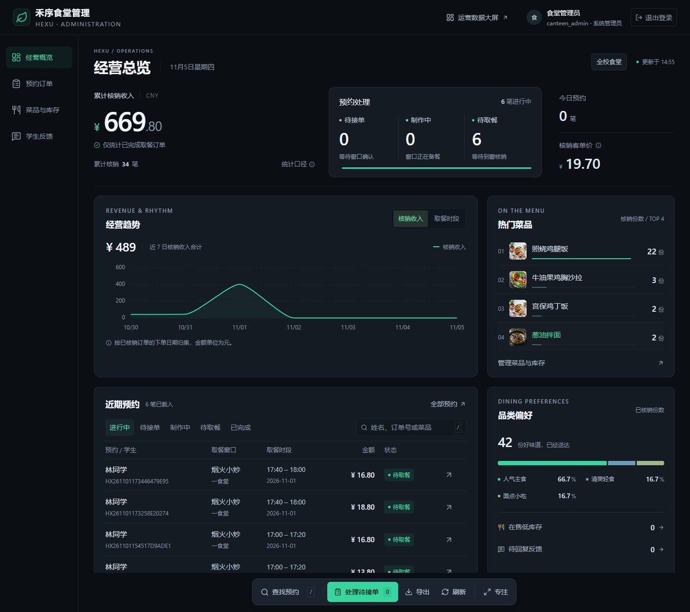

DESIGN → IMPLEMENTATION → VISUAL REVIEW
打开实际管理后台 ↗经营有序，界面有层次。
Vue 3 + ECharts 管理工作台：总览、订单、菜品库存和反馈已统一深色主题，并放大字号。
22 项 验收通过1440 / 1024 / 390 布局检查后端与权限 保持原实现截图时间：2026-11-05
真实管理体验账号和现有数据，未写入演示订单。

设计系统
深石墨背景、翡翠绿品牌，164px图标与中文导航与非对称Bento。主金额56px，正文和表格15px、操作14px、辅助信息至少12px；状态同时使用文字和颜色。工具栏独立留出空间，内容可滚动。
#0B0F14#141B23#1B2530#36D6A0
- 收入和客单价按已核销订单计算。
- 取餐节奏明确限定为当前已载入订单，不冒充全量统计。
- 搜索、筛选、抽屉、导出、刷新和专注视图可用。
- 接单、库存修改和核销继续由原有模块处理。
五个维度的自审
视觉层次主金额与当前队列优先，取消等重四宫格；缩小说明和排行，让预约表更早出现。
品牌识别保留禾序叶片，强调色只服务于关键动作、选中态和主数据。
信息密度一张主图、紧凑排行、可筛选预约表；累计与当日、金额与份数分别标明。
操作效率队列联动、快捷键、详情上下文与原模块直达，工具栏不会覆盖内容。
实现质量构建、登录刷新退出、空态、大金额、小屏和焦点恢复均完成检查。